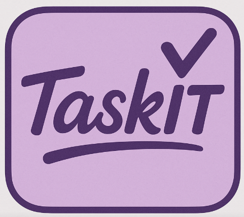

TaskIT Pro is a web-based task management system designed to help users create, organize, update, and delete tasks in one place.
It keeps track of tasks by category, priority, due date, and status, making everything simple and easy to manage.

Use the navigation options below to create, view, update, and manage your tasks.